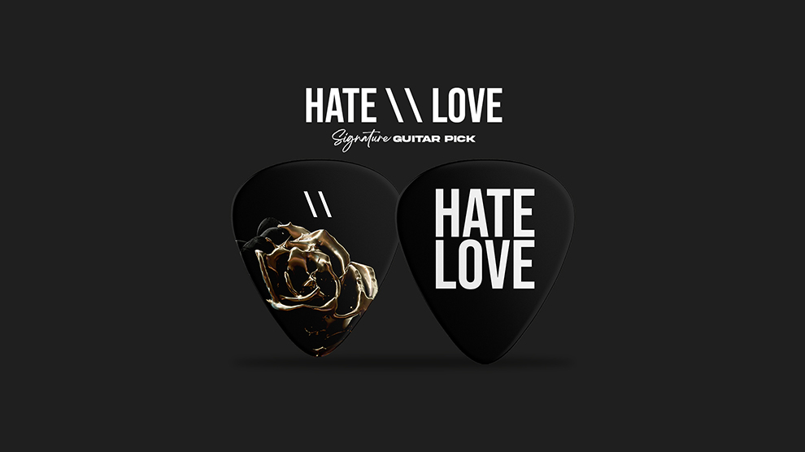

In the intertwining rhythm akin to a guitar's melody, love and hate merge in a captivating harmony. Like plucked strings, love produces a gentle melody, caressing the soul and embracing the heart with an ineffable warmth. Yet, not long after, hate strums the strings with captivating force, creating piercing notes and framing darkness within the soul. In the flow of created music, love and hate blend with beauty and destruction, narrating the intricate tale of humanity in inseparable knots of emotions. Like an enchanting guitar tune, love and hate become an integral part of life's symphony, vibrating the heart and permeating the soul with eternal charm.
